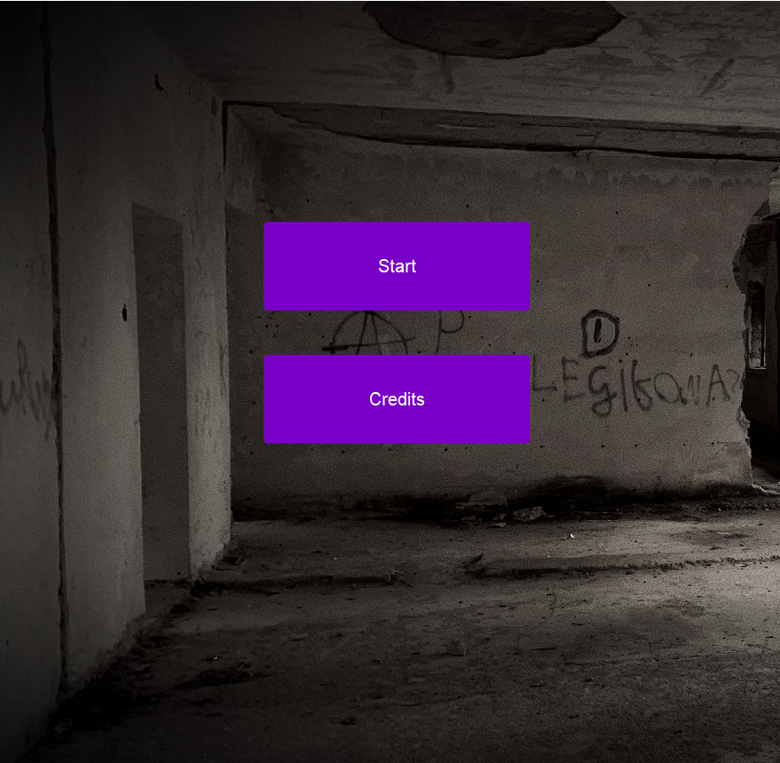
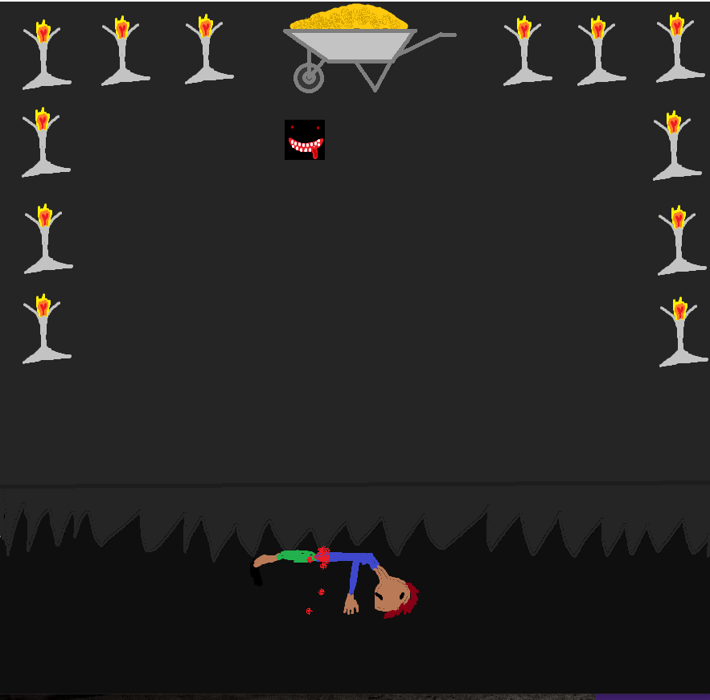

1. Wejdz na stronę https://www.java.com/pl/download/ i kliknij 'Pobierz oprogramowanie Java'
2. Po pobraniu pliku przeklikaj wszystko jak jest bazowo, aby pobrała się najnowsza java z jfxrt (użyte do odtwarzania wideo)
3. Po zainstalowaniu javy pobierz grę z https://drive.google.com/file/d/1BcsPPijqx6-WigsIUKSeQn79Ph9bi5cV/view?usp=drivesdk
4. Wystarczy włączyć pobrany plik, aby włączyć grę (działa bez instalera), w przypadku problemów skontaktować się z twórcą gry poprzez email: rzaba.kiddo@gmail.com
29.06.2022 0:22 menu glowne
29.06.2022 0:25 przykladowa mapa i ludzik (system chodzenia)
30.06.2022 23:16 naprawiony system chodzenia: usunieto bug przy skręcaniu. powstała koncepcja utworzenia launchera dodano animacje chodzenia i zmiane wyglądu tekstury zależnie od kierunku chodu